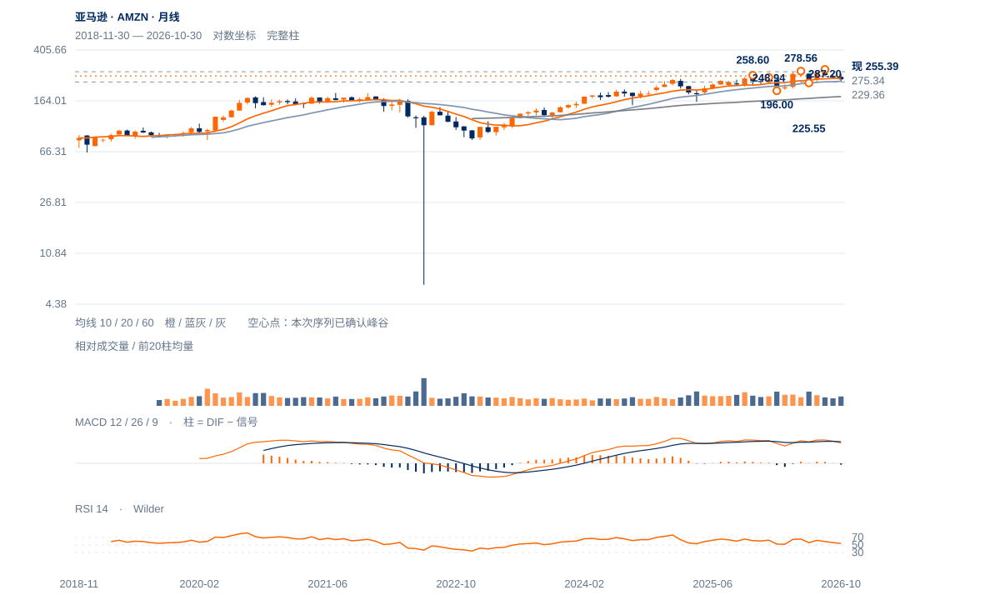

近期偏245低区反弹后的供应消化，258.60—260.14尚未形成收盘回收。
亚马逊 · 2026-11-23完整收盘
260.14盘中回收后又失，255.39仍属受阻反弹吗？
255.39+3.47%
窗口内上试与收盘回吐
分期限展望
未来2—6周仍以245附近承接与258.60—260.14受阻之间的重建看待。日收回收后再处理264.18—266.91窗口；23日盘中越线但收盘又失，尚未完成原275.34两日上层升级。
未来1—3个月保留225—287长期宽区间。当前反弹还没有重新进入区间上部，245.31防守及较高周谷先行；225下沿若失才影响更大区间，反之275.34保持可增加再次挑战上沿的依据。

长期背景
多年较高大谷尚在，今年225—287宽区间未被有效突破。275附近反复上试后回落，245附近承接与258.60—267窗口供应并存；长线偏强背景不等于区间上部恢复已经完成。 当前日收盘255.39与完整10月月线分开观察；11月尚未结束。
中期结构与新证据
完整周线已更新至11月20日：2026-08-03高287.20（2026-08-21确认）；2026-09-16低244.30（2026-10-02确认）；2026-10-30低229.36（2026-11-13确认）。最新一周与上次11月20日背景分别保存；24日国内与23日美股仅为本周进行中观察。23日开260.26、高262.48越260.14与258.60，收255.39又退回两线下。低251.25高于20日245.31，245.25月均衡附近承接暂存；日区间与20日重叠，未形成独立上升窗口。18日恢复、19日失去保持的记录继续。
确认与失效
258.60—260.14先收住，再处理264.18—266.91及275.34原两日。
245.31再失削弱均衡区承接；225为更大宽区间下沿。
主要反方
若日收重返258.60并推进原264.18—266.91窗口，当前受阻解释需下调；225长期下沿仍未破。
波动与量能
RSI14 48.44；ATR14 10.38；相对量1.01倍